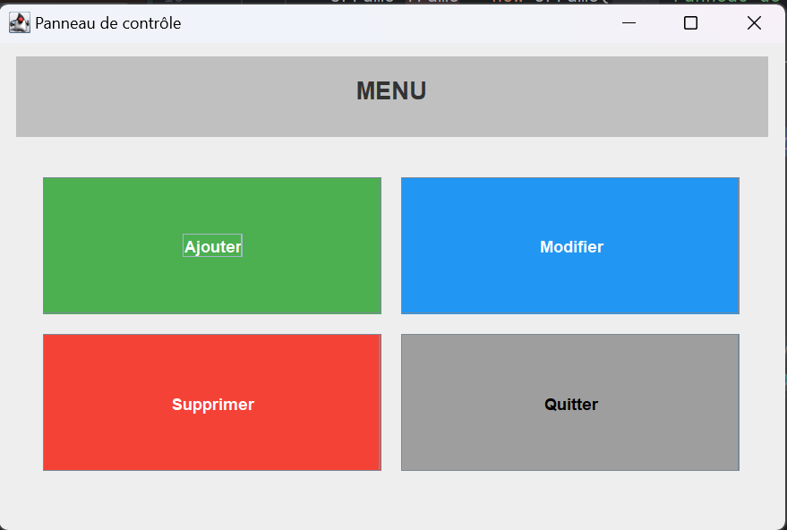

JButton – Les boutons en Swing
JButton est un composant graphique qui permet à l’utilisateur
d’effectuer une action en cliquant sur un bouton.
Créer un JButton
JButton btn = new JButton("Cliquez ici");
Propriétés essentielles de JButton
| Propriété | Description |
|---|---|
| text | Texte affiché sur le bouton |
| enabled | Active ou désactive le bouton (true / false) |
| background | Couleur du fond du bouton |
| foreground | Couleur du texte |
| font | Police du texte |
| toolTipText | Message affiché au survol du bouton |
Exemple simple
import javax.swing.*;
import java.awt.*;
public class ButtonExample {
public static void main(String[] args) {
JFrame frame = new JFrame("Exemple JButton");
frame.setSize(300, 200);
frame.setDefaultCloseOperation(JFrame.EXIT_ON_CLOSE);
frame.setLayout(new FlowLayout());
JButton button = new JButton("Valider");
button.setBackground(Color.GREEN);
button.setForeground(Color.WHITE);
button.setFont(new Font("Arial", Font.BOLD, 14));
button.setToolTipText("Cliquez pour valider");
frame.add(button);
frame.setVisible(true);
}
}
À retenir :
Un
JButton déclenche généralement une action lorsqu’on clique dessus.
La gestion du clic sera vue dans le chapitre Événements.
Exercice d'application:
-
Créer une fenêtre
JFrameintitulée "Panneau de contrôle" avec une taille600 x 400. -
Définir un
FlowLayoutpour la fenêtre afin de placer les panneaux l’un sous l’autre.frame.setLayout(new FlowLayout(FlowLayout.CENTER, 0, 10)); -
Créer un
JPanelnommé menuPanel :- Définir sa taille avec :
setPreferredSize(new Dimension(560, 60)); - Changer la couleur de fond
-
Ajouter un espace intérieur avec :
menuPanel.setBorder(new EmptyBorder(10, 10, 10, 10)); - Ajouter un
JLabelavec le texte "MENU".
- Définir sa taille avec :
-
Créer un deuxième
JPanelnommé panelButtons :- Utiliser un
GridLayout(2, 2, 15, 15). - Définir sa taille avec
setPreferredSize(new Dimension(560, 260)). -
Ajouter un espace intérieur avec :
panelButtons.setBorder(new EmptyBorder(20, 20, 20, 20));
- Utiliser un
-
Dans panelButtons, créer et ajouter
4 boutons :
- Ajouter
- Modifier
- Supprimer
- Quitter
-
Pour chaque
JButton:- Changer la couleur de fond.
- Changer la couleur du texte.
-
Ajouter un espace intérieur (padding) avec :
bouton.setMargin(new Insets(10, 20, 10, 20));
-
Ajouter les deux panels (
menuPanelpuispanelButtons) à la fenêtre. -
Afficher la fenêtre avec
setVisible(true).
Chaque JPanel a un rôle précis :
- menuPanel : zone du titre.
- panelButtons : zone des boutons.
